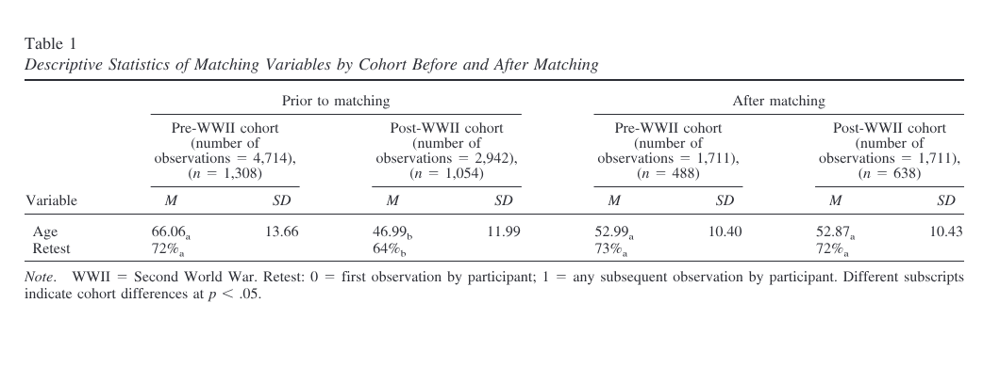
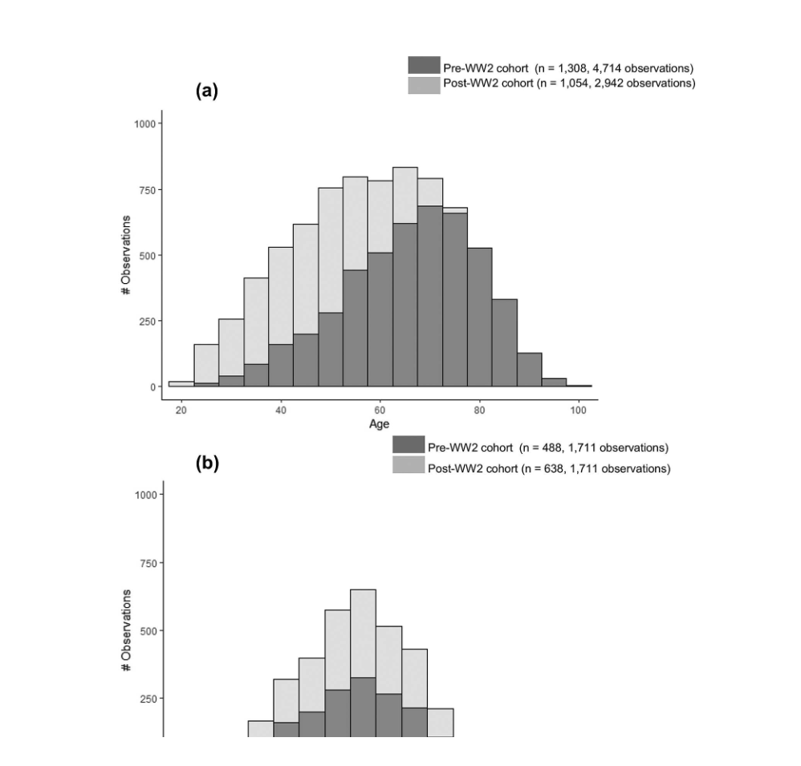
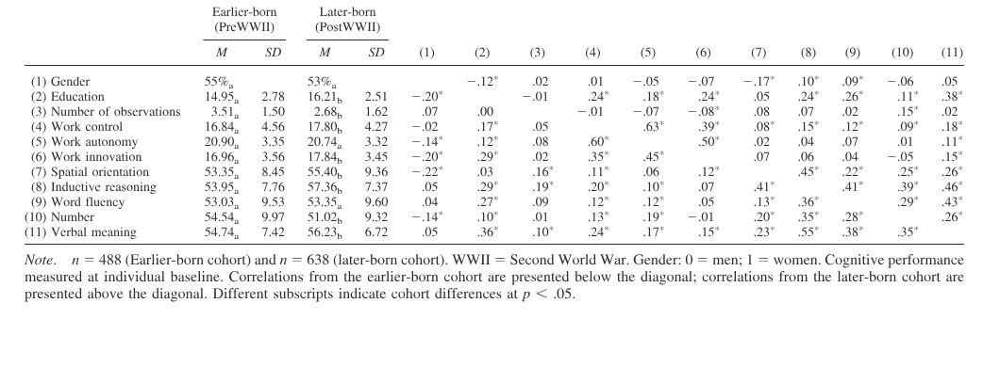
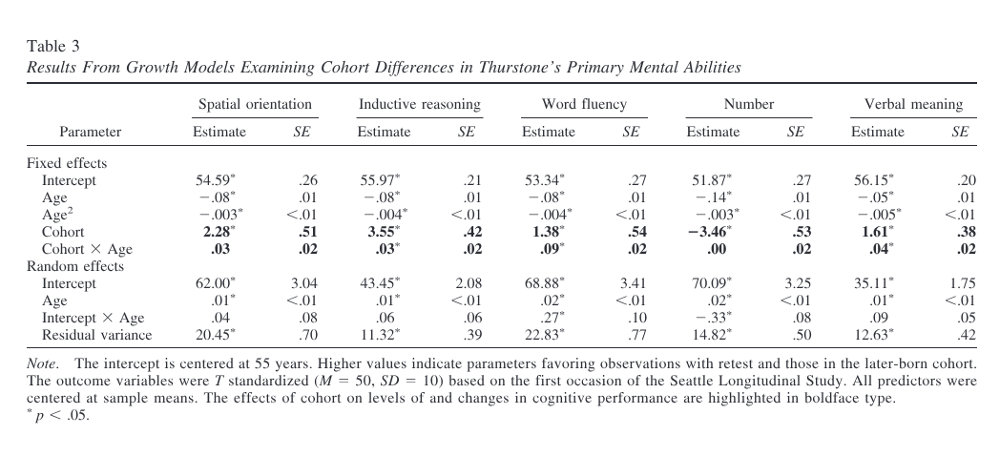
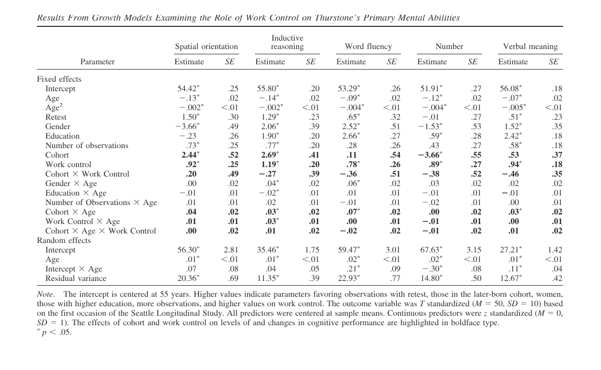
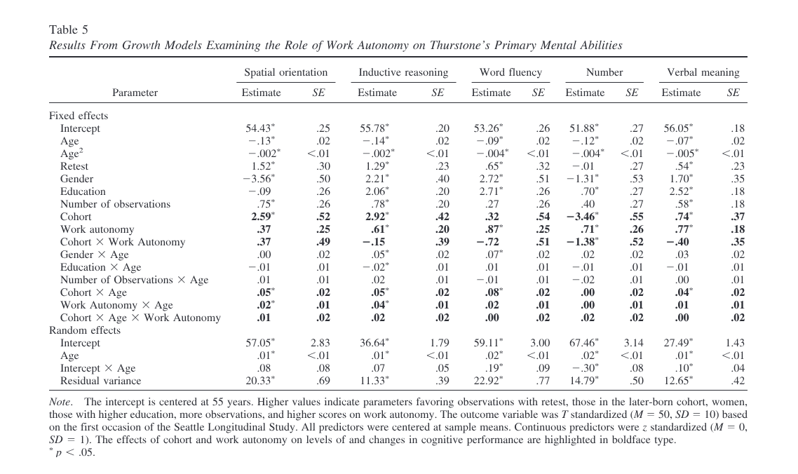
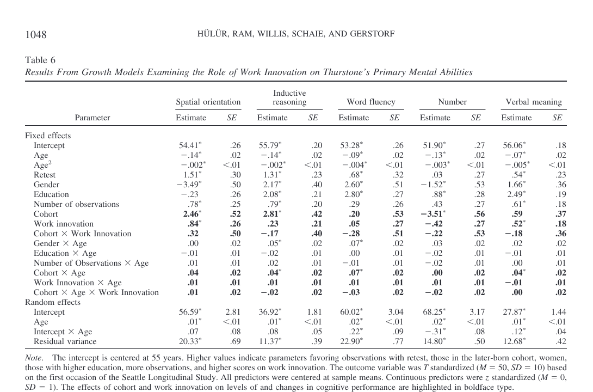
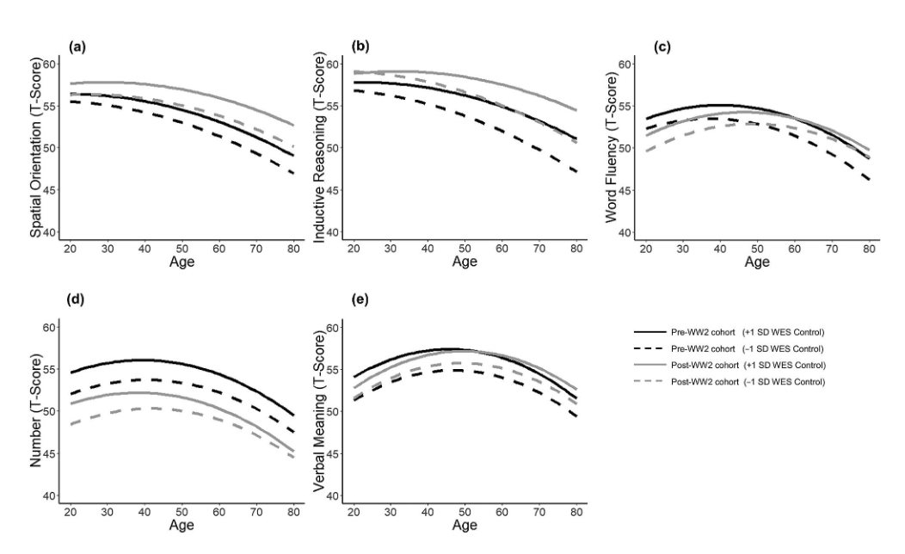
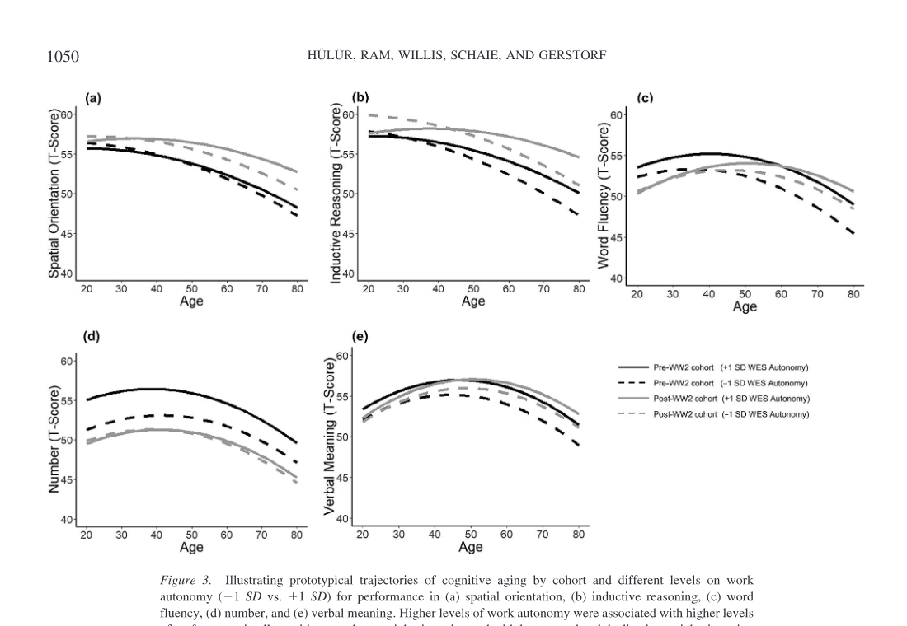
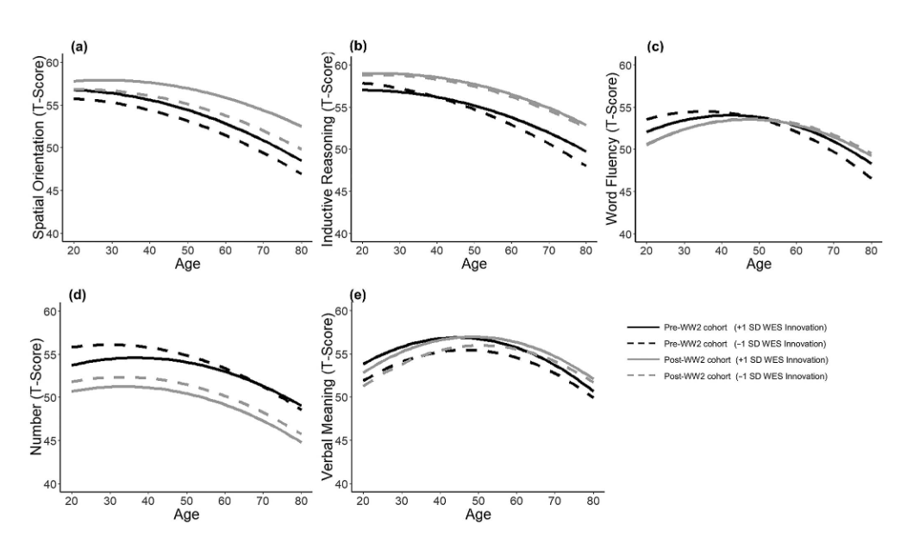

<!DOCTYPE html>
<html lang="en">
<head>
  <meta charset="utf-8" />
  <meta name="viewport" content="width=device-width, initial-scale=1" />
  <title>Cohort Differences in Cognitive Aging: The Role of Perceived Work Environment - 원문 읽기 | 성인발달과노화 읽기 사이트</title>
  <meta name="description" content="교육만이 아니라 성인기 노동환경이 코호트별 인지노화 차이에 어떻게 연결되는지 다루는 논문." />
  <script>
    (() => {
      try {
        const theme=localStorage.getItem("aa-theme");
        if(theme) document.documentElement.dataset.theme=theme;
        const fontScale=localStorage.getItem("aa-font-scale");
        if(fontScale) document.documentElement.style.setProperty("--reader-font-scale",fontScale);
      } catch (error) {}
    })();
  </script>
  <link rel="stylesheet" href="../../assets/styles.css" />
</head>
<body data-page-kind="article" data-reading-slug="hulur-et-al-2019" data-reading-page="full" data-reading-layout="reader-v2">
<header class="topbar">
  <div class="brand">
    <a class="brand-mark" href="../../index.html" aria-label="Home"></a>
    <div>
      <p class="brand-title">2026-1 성인발달과노화</p>
    </div>
  </div>
  <nav class="topbar-nav" aria-label="주요 메뉴">
    <a href="../../index.html#weekly">이번 주</a>
    <a href="../../index.html#readings">전체 읽기</a>
    <a href="../../index.html#schedule">읽기 일정</a>
  </nav>
  <div class="topbar-actions">
    <button class="ghost-btn" type="button" data-theme-toggle>다크 모드</button>
  </div>
</header>

<main class="reading-shell reading-detail-shell">
  <header class="article-header reading-detail-header"><div class="article-header-top reading-detail-top"><nav class="breadcrumbs" aria-label="breadcrumb"><a href="../../index.html">홈</a><span class="crumb-sep">/</span><a href="index.html">Cohort Differences in Cognitive Aging: The Role of Perceived Work Environment</a><span class="crumb-sep">/</span><span aria-current="page">원문 읽기</span></nav><p class="section-kicker">읽기 20</p><div class="rdp-kicker"><span class="chip brand">3/24</span><span class="chip strong">논문</span><span class="chip">영어</span></div><h1 class="rdp-title">Cohort Differences in Cognitive Aging: The Role of Perceived Work Environment</h1><p class="rdp-authors">Gizem Hülür, Nilam Ram, Sherry L. Willis, K. Warner Schaie, Denis Gerstorf · 2019</p><p class="rdp-hook">이 논문은 교육 수준만으로 설명해 온 코호트별 인지 차이가 실제로는 성인기 노동환경의 변화와도 연결되는지 묻는다.</p><div class="hero-cta-row"><a class="btn-primary" href="full.html">읽기</a> <a class="btn-ghost" href="professor-prep.html">교수님 답변 대비</a> <a class="btn-ghost" href="../../pdfs/hulur-et-al-2019.pdf" download>PDF 다운로드</a></div></div><nav class="tab-row" data-tab-row><a class="tab" href="index.html" data-tab-link>개요</a><a class="tab active" href="full.html" aria-current="page" data-tab-link>본문 읽기</a><a class="tab" href="translation.html" data-tab-link>번역본 읽기</a><a class="tab" href="professor-prep.html" data-tab-link>교수님 답변 대비</a><details class="tab-more" data-tab-more><summary class="tab-more-toggle" data-tab-more-toggle>더보기</summary><div class="tab-more-list" data-tab-more-list><a class="tab" href="summary.html" data-tab-link data-tab-more-link>핵심 요약</a><a class="tab" href="concepts.html" data-tab-link data-tab-more-link>핵심 개념</a><a class="tab" href="pitfalls.html" data-tab-link data-tab-more-link>헷갈리는 포인트</a><a class="tab" href="quiz-ox.html" data-tab-link data-tab-more-link>OX 퀴즈</a><a class="tab" href="quiz-short.html" data-tab-link data-tab-more-link>단답형 퀴즈</a><a class="tab" href="quiz-mcq.html" data-tab-link data-tab-more-link>객관식 퀴즈</a><a class="tab" href="review-sheet.html" data-tab-link data-tab-more-link>시험 직전 정리</a></div></details></nav></header>
  <div class="reading-progress" aria-hidden="true"><span data-reading-progress-bar></span></div>
  <div class="rpanel">
    <section class="rpanel-main">
      <section class="panel detail-block detail-content-block section-block">
        <section class="article-body detail-article-body article-body-pilot" data-reading-article-body><div class="article-frontmatter"><p>Gizem Hülür, University of Zurich</p>
<p>Nilam Ram, The Pennsylvania State University</p>
<p>Sherry L. Willis and K. Warner Schaie, University of Washington</p>
<p>Denis Gerstorf, Humboldt University and The Pennsylvania State University</p></div>
<h2 id="abstract">Abstract</h2>
<p>Studies of historical and societal influences on cognitive aging generally document that later-born cohorts outperform earlier-born cohorts on tests of fluid cognitive performance. It is often noted how advances in educational attainment in childhood and adolescence may contribute to these historical improvements in cognitive aging. Less is known about the role of work environment in adulthood. Over the last century, work demands and characteristics have been changing profoundly, particularly with shifts from a manufacturing to a service and technical economy. In this article, we used data from the Seattle Longitudinal Study to compare age-related trajectories of cognitive change in five primary mental abilities between earlier-born (1901–1938) and later-born cohorts (1939 –1966). Cohorts were matched on an observation-by-observation basis using age and retest, and analyses controlled for participants’ gender and number of data points provided. We found that (a) later-born cohorts had higher levels of performance on most cognitive tasks and exhibited less age-related declines in word fluency; (b) later-born cohorts had more enriched perceived work environments, as indicated by higher levels of worker control and innovation, with no cohort differences in work autonomy; (c) these experiences were associated with higher levels of cognitive performance at age 55 years; (d) the effects of perceived work environment were independent of education; and (e) the effects of perceived work environment were consistent across cohorts. The findings suggest that perceived work environment is associated with cognitive functioning independently of education and invariably across historical time. We discuss potential mechanisms underlying these associations.</p>
<p>Keywords: cognitive aging, cohort, perceived work environment, longitudinal, cognitive enrichment</p>
<h2 id="introduction">Introduction</h2>
<p>It is well documented that later-born cohorts outperform earlier-born cohorts on tests of fluid cognitive performance at the same age over the last century, a phenomenon first systematically observed in the 1970s and 1980s (Flynn, 1987; Schaie, Labouvie, &amp; Buech, 1973). This difference in mean-levels of performance has been well replicated in previous research focusing on cohort differences in cognitive performance over the entire adult life span (for overviews, see Hülür, 2017; Pietschnig &amp; Voracek, 2015). Studies of cognitive aging have shown that such improvements, initially observed in adolescence and early adulthood, are maintained into old age. Even at advanced ages, later-born cohorts perform at higher levels on cognitive tests than earlier-born cohorts (e.g., Ahrenfeldt et al., 2018; Christensen et al., 2013; Flynn, 2007; Gerstorf et al., 2015; Schaie, Willis, &amp; Pennak, 2005; Skirbekk, Stonawski, Bonsang, &amp; Staudinger, 2013). Less clear is whether cohorts also differ in the rate of age-related change— cognitive aging. Some studies show that later-born cohorts experience less age-related decline in cognitive performance (Dodge, Zhu, Lee, Chang, &amp; Ganguli, 2014; Gerstorf, Ram, Hoppmann, Willis, &amp; Schaie, 2011; Grasset et al., 2018; Schaie et al., 2005), whereas others find the opposite, with later-born cohorts showing more age-related decline (Brailean et al., 2018; Karlsson, Thorvaldsson, Skoog, Gudmundsson, &amp; Johansson, 2015). In other studies, there were no reliable cohort differences in the rate of age-related change, indicating that cohort differences in level of cognitive performance are neither compounded nor alleviated by differences in how the aging process unfolds (Finkel, Reynolds, McArdle, &amp; Pedersen, 2007; Zelinski &amp; Kennison, 2007). It is also important to note that there have been significant increases in life expectancy over the last century so that the number of years spent in aging varies across cohort (Christensen, Doblhammer, Rau, &amp; Vaupel, 2009).</p>
<h3 id="editors-note-and-author-information" data-reader-toc="false" class="article-meta-heading">Editor&#39;s Note and Author Information</h3>
<p>Editor’s Note. Thomas M. Hess served as the action editor for this article—EALS-M. Gizem Hülür, Department of Psychology and University Research Priority Program “Dynamics of Healthy Aging,” University of Zurich; Nilam Ram, Department of Human Development and Family Studies, The Pennsylvania State University; Sherry L. Willis and K. Warner Schaie, Department of Psychiatry and Behavioral Sciences, University of Washington; Denis Gerstorf, Department of Psychology, Humboldt University, and Department of Human Development and Family Studies, The Pennsylvania State University. The findings were not previously disseminated elsewhere. Correspondence concerning this article should be addressed to Gizem Hülür, Department of Psychology and University Research Priority Program “Dynamics of Healthy Aging,” University of Zurich, Andreasstrasse 15, Zürich 8050, Switzerland. E-mail: gizem.hueluer@uzh.ch Psychology and Aging © 2019 American Psychological Association 2019, Vol. 34, No. 8, 1040 –1054 0882-7974/19/$12.00 http://dx.doi.org/10.1037/pag0000355 1040</p>
<h2 id="cohort-differences-in-cognitive-aging-possible-explanations">Cohort Differences in Cognitive Aging: Possible Explanations</h2>
<p>Previous research has proposed a number of explanations for this historical increase in levels of cognitive performance (Neisser, 1998; Nisbett et al., 2012), with increases in education being considered one of the central factors (e.g., Schaie et al., 2005). Both the quantity and quality of education are related to individual differences in levels of and changes in cognitive performance late in life (Sisco et al., 2015; Terrera, Minett, Brayne, &amp; Matthews, 2014). Over the last century, levels of educational attainment and quality of education have both increased dramatically (Blair, Gamson, Thorne, &amp; Baker, 2005; Schaie et al., 2005). Other explanations include historical changes in factors surrounding early life development, such as family size and parental attitudes toward education, or nutrition and hygiene (for overview, see Neisser, 1998; Nisbett et al., 2012). The role of these changes for historical improvements in cognitive development in childhood, adolescence, and early adulthood has been widely discussed. From a life span developmental perspective, historical changes in factors surrounding developmental tasks of adulthood may also contribute to cohort differences in cognitive performance. Work demands and characteristics of people’s work life during adulthood have also changed profoundly over the last century (for overview, see National Research Council, 1999). For example, the shift to a postindustrial society (Bell, 1976) was accompanied by changes in the frequency of respective job categories (e.g., manufacturing, service, management, technical, and professional), and also a shift in the demands of a given job and in the organizational structure it is embedded in. Shifts in the structure of work have included increased decision making/control by worker rather than employer, which has contributed to an increasing proportion of jobs being classified as professional rather than manual labor or routinized (assembly line) work (National Research Council, 1999). However, less is known about the role of changes in the structure of work environment for cohort differences in cognitive aging. In this study we examined how differences in individuals’ perceived work environment were associated with cohort differences in cognitive aging, work being a primary developmental task in adulthood (Vondracek, 1998).</p>
<h2 id="work-environment-and-cognitive-aging">Work Environment and Cognitive Aging</h2>
<p>According to the “use it or lose it” hypothesis of cognitive aging, cognitive enrichment and cognitively engaging activities are associated with the maintenance of high levels of cognitive functioning in old age (for an overview, see Hertzog, Kramer, Wilson, &amp; Lindenberger, 2008; for a debate, see Salthouse, 2006; Schooler, 2007). Similar ideas have been brought forward with respect to characteristics of individuals’ work environment (Schooler, 1984; Willis &amp; Schaie, 2006), with more cognitively enriching work demands providing an optimal environment for cognitive development and maintenance. Theoretically, engaging with complex environmental demands with greater decision making and control by the worker are considered beneficial to cognitive functioning, while simple environments with routinized work are considered detrimental to cognitive functioning (Kohn &amp; Schooler, 1978). Among characteristics of work environments thought to be beneficial to cognitive functioning are self-direction (worker control) and cognitive stimulation (e.g., Kohn &amp; Schooler, 1983; Schooler, Mulatu, &amp; Oates, 2004). A growing number of studies have examined associations between work environment and cognitive performance over the adult life span (Andel, Finkel, &amp; Pedersen, 2016; Andel, Kåreholt, Parker, Thorslund, &amp; Gatz, 2007; Boots et al., 2015; de Frias &amp; Schaie, 2001; Finkel, Andel, Gatz, &amp; Pedersen, 2009; Fisher et al., 2014; Gow, Avlund, &amp; Mortensen, 2014; Marquié et al., 2010; Oltmanns et al., 2017; Potter, Helms, &amp; Plassman, 2008; Smart, Gow, &amp; Deary, 2014). These studies typically show that more cognitively stimulating work environments (typically measured as occupational complexity with data, people, and things and innovative work) are related to higher levels of cognitive performance. Furthermore, complex and innovative work has been linked to brain health in old age (for overview, see Burzynska, Jiao, &amp; Ganster, 2019). However, the associations between work stimulation and rate of age-related change are less clear. Some studies show that more stimulating work environments are indeed associated with shallower rates of cognitive decline (e.g., Andel et al., 2016; Potter, Plassman, Helms, Foster, &amp; Edwards, 2006), while others find that associations differ by cognitive ability. For example, Finkel and colleagues (2009) found that complex and innovative work involving interactions with people was associated with rates of change in verbal and spatial ability, but not in memory. Over the last century, work characteristics and demands have changed considerably, with a shift from a manufacturing economy to a service and technical economy (Willis &amp; Schaie, 2006; for overview, see National Research Council, 1999). Furthermore, more recent cohorts are entering work environment at later age, given increased educational work requirements, than earlier cohorts (Schaie, 2013; Toossi, 2002). With the share of routine manufacturing work declining due to automatization, computerization, and offshoring to low-cost countries in many developed and developing countries (e.g., Aum, Lee, &amp; Shin, 2018; Autor, 2015; Reijnders &amp; de Vries, 2018), it is possible that later cohorts’ work environments in countries like the US are increasingly characterized by more complex and innovative activities. As reviewed above, characteristics of the work environment have been at least partially linked to individual-differences in cognitive performance and cognitive aging. The role that characteristics of the work environment play in cohort differences in cognitive performance and cognitive aging, though, is not yet known.</p>
<h2 id="the-present-study">The Present Study</h2>
<p>In the present study, we use longitudinal data from the Seattle Longitudinal Study (SLS) to examine how differences in perceived work environment and education are associated with cohort differences in cognitive aging. We compare age-related trajectories of change on five primary mental abilities between earlier-born (1901–1938) and later-born cohorts (1939 –1966) over the same age range (21 to 73 years), with cohorts being matched on age and retest on an observation-by-observation basis and taking into account additional relevant covariates (gender and number of data points available per participant). The average year of birth was 1925 for the earlier-born cohort and 1947 for the later-born cohort, respectively. Given the average levels of education in each cohort, the typical participant in the earlier-born cohort entered the workforce in the postwar period in the late 1940s and the typical participant in the later-born cohort entered the workforce in the late 1960s or early 1970s. As noted at the time (Bell, 1976), the 1960s and 70s was a period when the United States was transitioning to a postindustrial society where professional and technical work gained importance in the economy. We examined the role of three different characteristics of individuals’ work environment, work control, work autonomy, and work innovation. Work control refers to the degree to which the employee controls their work process as opposed to following rules set by management. Work autonomy refers to the degree to which employees can make their own decisions and are self-sufficient. Work control/autonomy and skill variety are considered central characteristics of the work environment (e.g., Hackman &amp; Oldham, 1975). In the present study, work autonomy and work control are operationalized as two separate dimensions, reflecting internal and external work control beliefs, respectively (Levenson, 1981; Lachman, Neupert, &amp; Agrigoroaei, 2011). Previous research has widely documented associations between work control and cognitive performance (Sabbath, Andel, Zins, Goldberg, &amp; Berr, 2016; Then et al., 2014). It has been argued that work with high levels of worker control involves more active use of cognitive executive functions (Then et al., 2014). In addition, previous research has linked domain-general perceptions of control to cognitive development and aging (Lachman, 1983; Lachman &amp; Leff, 1989). Work innovation indicates the degree to which people’s work involves variety, change, and new approaches. A lower degree of routinization and high novelty are considered key characteristics of cognitively enriching work environments (Staudinger, Finkelstein, Calvo, &amp; Sivaramakrishnan, 2016). A recent intervention study documented that increasing work novelty resulted in increases in cognitive performance (Oltmanns et al., 2017). Work innovation relates to both creativity and variation of tasks, thus variation of involved skills. Task switching and cognitive flexibility are associated with problem solving (Cañas, Quesada, Antolí, &amp; Fajardo, 2003; Gilhooly &amp; Fioratou, 2009). In light of these theoretical considerations and empirical findings, we consider work characterized by high levels of worker control, autonomy, and innovation as cognitively more enriching. In line with prior findings, we expected that later-born cohorts would show higher levels of cognitive performance, and that some of these differences would be associated with changes in work. Specifically, we expected that engagement with cognitively enriching perceived work environments in adulthood would be associated with higher levels of and more favorable age trajectories in cognitive performance, independent of the effects of education (which primarily occurs relatively early in the life span).</p>
<h2 id="method">Method</h2>
<p>To examine longitudinal changes in cognitive performance, we used data from the SLS, an interdisciplinary longitudinal panel study that is particularly suitable for the study of cohort differences because the study has followed a substantial number of individuals from different cohorts for more than half a century. Data on a broad set of cognitive abilities have been collected every seven years (nine waves of data collection between 1956 and 2012) as individuals moved across the entire adult life span, early adulthood to very old age. Data on perceived work environment were collected at four waves (1991, 1998, 2005, and 2012). Detailed descriptions of participants, variables, and procedures can be found in Schaie (2013). Select details relevant to the present study are given below.</p>
<h3 id="participants-and-procedure">Participants and Procedure</h3>
<p>The SLS started in 1956 with participants recruited randomly, within gender and age/cohort groups (age 22 to 70 years), from the membership of a HMO in the Seattle, Washington, metropolitan area. Participants were community-dwelling individuals from various occupational, educational, and economic backgrounds (Schaie, 2013). Data were collected every seven years. New participants over the same age range were added to the sample at each wave along with an additional group that matched the current age range of the initial sample. A total of 2,539 participants contributed at least one occasion of cognitive testing during the 1991, 1998, 2005 and 2012 waves. In the present analysis, we included data from all participants who had provided (a) at least one occasion of cognitive performance, and (b) information on perceived work environment and education. This subsample included 2,362 participants (53% women) who were on average 50 years old ( SD 16, range 21– 84) at the first available wave. Compared with the participants in our subsample, the 177 participants (7%) who were excluded because of missing data on perceived work environment or education were older at their first available wave (Cohen’s d 0.77; p .01) and had lower scores on all tests of cognitive performance ( p .01), with effect sizes ranging from Cohen’s d 0.33 for number ability to d 0.81 for inductive reasoning. In total, we used longitudinal data obtained on nine occasions over up to 56 years (1956, 1963, 1970, 1977, 1984, 1991, 1998, 2005, and 2012). Of the 2,362 participants in our subsample, 500 (21%) provided only one wave of data, 17% of the earlier-born cohort and 27% of the later-born cohort. On average, participants provided 3.24 longitudinal observations ( SD 1.87, range 1 to 9), 3.60 observations ( SD 1.99, range 1 to 9) in the earlier-born cohort and 2.79 observations ( SD 1.58, range 1 to 8) in the later-born cohort.</p>
<h3 id="measures">Measures</h3>
<h4 id="cognitive-abilities">Cognitive Abilities</h4>
<p>All participants completed a battery of cognitive measures at each wave. Our longitudinal analysis made use of five subtests from the 1948 Primary Mental Abilities (PMA) 11–17 version of Thurstone’s Primary Mental Abilities Test (Thurstone &amp; Thurstone, 1949) that has been assessed at every wave since 1956 (Bosworth, Schaie, &amp; Willis, 1999; Bosworth, Schaie, Willis, &amp; Siegler, 1999; Hülür, Ram, Willis, Schaie, &amp; Gerstorf, 2015, 2016). Spatial orientation was measured as the visualization of object rotations in two-dimensional space. Participants were given a stimulus figure and were asked to indicate which of the six response figures were a rotation and not a mirror image of the stimulus figure. Inductive reasoning was measured with a test that assesses an individual’s ability to induct the rules according to which letter series are formed. Participants were given alphabetic series and asked to identify from among six letters the letter that logically followed in the sequence. Word fluency was measured with a test that assesses an individual’s ability to retrieve words from long-term memory according to a lexical rule, including common nouns, but not proper nouns. Participants were asked to name as many words beginning with the letter S as possible within 5 min. The test was scored based on the number of valid words produced. Number ability was measured with a test of simple addition skills by asking participants to decide whether the solution to a given arithmetic problem was correct. Number ability was scored as the difference between the frequency of correct versus incorrect responses. Verbal meaning was measured as an individuals’ ability to recognize verbal meaning. Participants were presented with words and asked, for each word, to select the correct synonym out of four alternatives. Raw scores on each cognitive test were transformed to a T -score metric ( M 50, SD 10), with the first occasion of the entire SLS sample as reference (see Schaie, 2013). Previous analyses showed that 1-month rest–retest reliabilities were high for all tests (based on a subsample of N 705; r .78; see Schaie, 2013).</p>
<h4 id="cohort">Cohort</h4>
<p>Cohort was invoked as a binary variable indicating whether an individual was born prior to or after the onset of the Second World War (WWII; 1938 and earlier coded as 0; 1939 and later coded as 1). This natural splitting into cohorts by major historical event kept the sample size comparable across cohorts (average year of birth in the sample was 1938).</p>
<h4 id="time-metric">Time Metric</h4>
<p>The time metric for our analyses of withinperson change was chronological age, calculated as the number of years since an individual’s year of birth.</p>
<h4 id="perceived-work-environment">Perceived Work Environment</h4>
<p>Starting in 1991, individuals’ perceived work environment was measured at each wave using an abbreviated version of the Work Environment Scale (WES; Moos, 1981). Participants were asked to answer 15 items (5-point Likert scale) with respect to (a) their current place of work if they were employed, (b) their principal job if they had more than one job, (c) their last major job if they were retired, and (d) conditions at home if they were a full-time homemaker (Schaie, 2013). The Control subscale indicates the degree to which the management uses rules and pressure to keep employees under control (e.g., “You are expected to follow set rules in doing your work”). The items were reverse-scored so that higher scores indicate more work control by the employee. The Autonomy subscale indicates the degree to which employees are encouraged to make their own decisions and be self-sufficient (e.g., “You have a great deal of freedom to do as you like in your workplace”). Higher scores indicate more work autonomy. The Innovation subscale indicates the degree to which people’s work involves variety, change, and new approaches (e.g., “You are encouraged to do your work in different ways”). Higher scores indicate more innovative work. The WES subscales have not yet been extensively studied in the context of age-related cognitive change, but have been associated with cognitive style (e.g., de Frias &amp; Schaie, 2001) and burnout (e.g., Turnipseed, 1994). Participants completed the WES on up to four occasions. Repeated measures were aggregated with the goal of including data from as many participants as possible while obtaining an appropriate characterization of people’s perceived work environment. If a participant provided only one wave of data on the WES subscales, we used this measure to indicate their perceived work environment. If a participant provided more than one wave of data and was working in at least one of those waves, we used the average of all waves during which they were working to indicate their perceived work environment. For the remaining participants, we used the average of all available occasions as retiree or, if they did not report any current or previous job, as homemaker. In sum, the perceived work environment ratings of 1,390 participants (59%) were about a job they were currently working at, the ratings of 842 participants (36%) were about a job they were retired from, and the ratings of 130 participants (6%) were about their homemaking. The reliabilities of the subscales were satisfactory, with Cronbach’s alpha ranging from.68 to.78 (de Frias &amp; Schaie, 2001).</p>
<h4 id="covariates">Covariates</h4>
<p>Gender was indicated by a binary variable (0 men; 1 women). Education was indicated by years spent in formal education. If more than one measurement was available, we used the highest degree of education reported by an individual. To index familiarity with the test procedure, we defined retest as a binary variable that was coded 0 for the first occasion of cognitive testing and 1 for all subsequent occasions. Number of observations indicated how many longitudinal observations per participant were utilized in the present analysis (see section on data preparation for details). Data Preparation</p>
<h3 id="data-preparation">Data Preparation</h3>
<figure class="article-figure is-table"><a class="article-figure-link" href="../../assets/readings/hulur-et-al-2019/figures/table-1.png" target="_blank" rel="noopener"></a><figcaption>Table 1. Descriptive Statistics of Matching Variables by Cohort Before and After Matching</figcaption><p class="article-figure-action"><a href="../../assets/readings/hulur-et-al-2019/figures/table-1.png" target="_blank" rel="noopener">크게 보기</a></p></figure>
<figure class="article-figure is-figure"><a class="article-figure-link" href="../../assets/readings/hulur-et-al-2019/figures/figure-1.png" target="_blank" rel="noopener"></a><figcaption>Figure 1. Distribution of longitudinal observations by cohort before and after matching</figcaption><p class="article-figure-action"><a href="../../assets/readings/hulur-et-al-2019/figures/figure-1.png" target="_blank" rel="noopener">크게 보기</a></p></figure>
<figure class="article-figure is-table"><a class="article-figure-link" href="../../assets/readings/hulur-et-al-2019/figures/table-2.png" target="_blank" rel="noopener"></a><figcaption>Table 2. Descriptive Statistics and Intercorrelations of Predictor and Outcome Variables by Cohort After Matching</figcaption><p class="article-figure-action"><a href="../../assets/readings/hulur-et-al-2019/figures/table-2.png" target="_blank" rel="noopener">크게 보기</a></p></figure>
<p>We used two procedures to minimize possible confounds and to equate the cohorts as closely as possible. First, we used propensity score matching procedures (Coffman, 2011; Jackson, Thoemmes, Jonkmann, Lüdtke, &amp; Trautwein, 2012; Stuart, 2010; Thoemmes &amp; Kim, 2011) to obtain matched cohort groups. Participants from the earlier-born cohort who joined the study at earlier waves had the opportunity to contribute more observations compared with participants from the later-born cohort who joined the study at comparable ages. Thus, we used 1:1 matching methods to select for each observation from the later-born cohort (2,942 observations in total) a matching observation from the earlier-born cohort (4,714 observations in total) that had the same (or as similar as possible) age and retest status. After calculating the between-groups distance matrix (using the logit-transformed propensity scores, as recommended in the propensity score matching literature, e.g., Rosenbaum &amp; Rubin, 1985), a caliper matching algorithm was used to identify nearby matches. Starting with caliper distance (maximum allowable distance between matched observation) of c = 0.20 SD, the caliper was reduced by steps of 0.01 SD until cohort differences in age and retest were no longer reliably different from 0 at p &lt; .05. Each observation in the later-born cohort was thus matched with the most similar observation from the earlier-born cohort only if this observation fell within the caliper distance. For 1,711 observations in the later-born cohort (58%), a suitable match from the earlier-born cohort could be identified with a caliper of c = 0.06 SD. Descriptive statistics for the age and retest variables by cohort prior to and after the matching are given in Table 1. Figure 1 shows the distribution of longitudinal observations across chronological age by cohort prior to (Figure 1a) and after the matching (Figure 1b). Second, to control for further known differences between birth-year cohort groups, we included gender, education, retest, and number of observations (calculated after the selection of observations via propensity score matching) as additional covariates in our analysis models. We note that these covariates could have instead been included in the estimation of the propensity score. However, preliminary analyses showed that there was a substantial tradeoff between the number of variables included in the propensity score matching procedure and the potential to identify suitably similar observations. Thus, to balance the need for statistical control using covariates with statistical power considerations, we chose to minimize differences with regard to age and retest while maintaining groups with sample sizes close to 500 with 1,500+ observations for each cohort. Age was centered at 55 years. Other covariates were centered at sample means. Continuous predictors (perceived work environment subscales, education, and number of observations) were z-standardized (M = 0, SD = 1). Table 2 shows descriptive statistics and intercorrelations for the analysis variables by cohort. Participants in the later-born cohort had higher scores on the work control (Cohen&#39;s d = 0.22; p &lt; .01) and work innovation (d = 0.25; p &lt; .01), indicating a historical shift toward more enriching and complex perceived work environment. Cohort differences in the work autonomy subscale were not reliably different from 0.</p>
<h3 id="data-analysis">Data Analysis</h3>
<p>Cohort differences in age-related longitudinal change in cognitive performance were examined using growth models (see Ram &amp; Grimm, 2015). Age was chosen as the time metric because we aimed at studying trajectories of cognitive change that resulted from normative aging processes (Ram, Gerstorf, Fauth, Zarit, &amp; Malmberg, 2010). At the within-person level (Level 1), the models were specified as cognitive performance_ti = ?0i + ?1i(ageti) + ?2i(ageti^2) + ?3i(retestti) + ?ti, (1) where cognitive performance_ti represents person i&#39;s cognitive test score at time t. The models were estimated separately for each of the five cognitive tests. ?0i is a person-specific intercept parameter indicating the level of performance at age 55 years, ?1i is a person-specific linear slope parameter that characterizes the rate of age-related change in cognitive performance, ?2i is a quadratic slope parameter reflecting the acceleration of age-related change, ?3i indicates the effect of familiarization with the testing procedure on performance (with the first occasion coded as 0 and all subsequent occasions coded as 1), and ?ti is residual error. Although retest intervals were uniform, participants entered the study at different ages. This allowed us to separate the effects of age and retest (see Salthouse, 2016). Person-specific intercept (?0i) and linear (?1i) and quadratic slope (?2i) parameters were modeled at the between-person level (Level 2) as ?0i = ?00 + ?01(cohorti) + ?02(WES scorei) + ?03(genderi) + ?04(educationi) + ?05(number of observationsi) + ?06(cohorti ? WES scorei) + u0i, (2) ?1i = ?10 + ?11(cohorti) + ?12(WES scorei) + ?13(genderi) + ?14(educationi) + ?15(number of observationsi) + ?16(cohorti ? WES scorei) + u1i, (3) ?2i = ?20, (4) ?3i = ?30. (5) Models were run separately for each of the three perceived work environment subscales. With all the predictors centered at sample means, ?00, ?10, and ?20 indicated the trajectory of the average person in the sample. Positive parameter estimates indicate differences favoring participants in the later-born cohort, women, those with more education, and those who provided more data points. The interaction effect of cohort and the WES score on level of and change in cognitive performance (?06 and ?16) indicates how the relation between perceived work environment and cognitive performance differs by cohort. Residual between-person differences u0i and u1i were assumed to be multivariate normally distributed, correlated with each other, and uncorrelated with the residual errors, ?ti. Between-person differences in the quadratic slope and in retest, u2i and u3i, were not modeled to keep the analyses consistent across outcome variables because models with three or four random effects did not converge (given the low number of repeated measures). Models were estimated using SAS Proc Mixed (Littell, Milliken, Stroup, &amp; Wolfinger, 1996) with incomplete data treated as missing at random (Little &amp; Rubin, 1987) so that data from participants who provided only one observation still contributed to the estimation (e.g., of the intercept).</p>
<h2 id="results">Results</h2>
<h3 id="cohort-differences-in-cognitive-functioning">Cohort Differences in Cognitive Functioning</h3>
<figure class="article-figure is-table"><a class="article-figure-link" href="../../assets/readings/hulur-et-al-2019/figures/table-3.png" target="_blank" rel="noopener"></a><figcaption>Table 3. Results From Growth Models Examining Cohort Differences in Thurstone&#39;s Primary Mental Abilities</figcaption><p class="article-figure-action"><a href="../../assets/readings/hulur-et-al-2019/figures/table-3.png" target="_blank" rel="noopener">크게 보기</a></p></figure>
<p>Table 3 presents results from growth models examining whether matched cohorts differed in their age-related trajectories of cognitive performance. Across all cognitive tests, the average level of performance of the present study sample at age 55 years (  00 s ranging from 51.87 to 56.15) was higher than the average performance level of the entire 1956 SLS sample, which was used to T -standardize the cognitive performance measures ( M 50; SD 10). Between-person differences in average levels of cognitive tests were reliably different from 0 after accounting for age trends and cohort differences ( u 0 2 s ranging from 35.11 to 70.09). Across all cognitive tests, performance declined with advancing age. The linear component of age-related decline ranged between 5% and 14% of a SD unit per decade of age (  10 s ranging from  0.05 to  0.14 per year of age). The quadratic component was reliably different from 0 indicating accelerated decline at older ages (  20 s ranging from  0.003 to  0.005 per year of age). Cohort differences in level and rates of change in cognitive performance were of particular interest for our research question. Results revealed that— compared with individuals born prior to WWII—individuals born after WWII showed higher levels of cognitive performance at age 55 years (  01 s ranging from 1.38 to 3.55) in all cognitive tests, except for number ability where the later-born cohort showed lower levels of performance (  01  3.46). As well, participants in the later-born cohort showed less steep age-related decline in inductive reasoning (  11 0.03), word fluency (  11 0.09), and verbal meaning (  11 0.04).</p>
<h3 id="the-role-of-perceived-work-environment">The Role of Perceived Work Environment</h3>
<figure class="article-figure is-table"><a class="article-figure-link" href="../../assets/readings/hulur-et-al-2019/figures/table-4.png" target="_blank" rel="noopener"></a><figcaption>Table 4. Results From Growth Models Examining the Role of Work Control on Thurstone&#39;s Primary Mental Abilities</figcaption><p class="article-figure-action"><a href="../../assets/readings/hulur-et-al-2019/figures/table-4.png" target="_blank" rel="noopener">크게 보기</a></p></figure>
<figure class="article-figure is-table"><a class="article-figure-link" href="../../assets/readings/hulur-et-al-2019/figures/table-5.png" target="_blank" rel="noopener"></a><figcaption>Table 5. Results From Growth Models Examining the Role of Work Autonomy on Thurstone&#39;s Primary Mental Abilities</figcaption><p class="article-figure-action"><a href="../../assets/readings/hulur-et-al-2019/figures/table-5.png" target="_blank" rel="noopener">크게 보기</a></p></figure>
<figure class="article-figure is-table"><a class="article-figure-link" href="../../assets/readings/hulur-et-al-2019/figures/table-6.png" target="_blank" rel="noopener"></a><figcaption>Table 6. Results From Growth Models Examining the Role of Work Innovation on Thurstone&#39;s Primary Mental Abilities</figcaption><p class="article-figure-action"><a href="../../assets/readings/hulur-et-al-2019/figures/table-6.png" target="_blank" rel="noopener">크게 보기</a></p></figure>
<p>Results from growth models examining cohort differences in cognitive performance and the role of perceived work environment and covariates are displayed in Table 4 (work control), Table 5 (work autonomy), and Table 6 (work innovation). Independent of individual differences in gender, education, retest, and number of observations, greater work control was associated with higher levels of performance in all cognitive tests (?02s ranging from 0.78 to 1.19 for one SD higher score on work control). In addition, participants with higher work control showed less steep age-related declines in inductive reasoning (?12 = 0.03 for one SD higher score on work control). Greater work autonomy was also associated with higher levels of performance in all cognitive tests (?02s ranging from 0.61 to 0.87 for one SD higher score on work autonomy) except for the test of spatial orientation. Furthermore, participants with higher work autonomy showed less steep age-related declines in spatial orientation (?12 = 0.02 for one SD higher score on work autonomy) and inductive reasoning (?12 = 0.04 for one SD higher score on work autonomy). Finally, greater work innovation was associated with higher levels of performance on tests of spatial orientation (?02 = 0.84 for one SD higher score on work innovation) and verbal meaning (?02 = 0.51 for one SD higher score on work innovation) but not for tests of inductive reasoning, word fluency, and number ability. Using interaction terms, Cohort ? Perceived Work Environment, we examined whether the relations between perceived work environment and levels of cognitive performance and cognitive change differed by cohort. The effect of work autonomy on level of number ability at age 55 was moderated by cohort (?06 = -1.38 for one SD higher score on work autonomy), indicating that the positive effect of work autonomy on number ability is diminished for the later-born cohort. Other interaction effects were not reliably different from 0. After controlling for the effects of perceived work environment, gender, and education, the association of cohort with levels of cognitive performance was still reliably different from 0 for spatial orientation, inductive reasoning, and number, indicating cohort differences beyond those explained by the work variables and covariates. For word fluency and verbal meaning, however, cohort differences in levels of performance were no longer reliably different from 0 once controlling for perceived work environment and covariates. The effects of cohort and perceived work environment on cognitive performance are illustrated in Figure 2 (work control), Figure 3 (work autonomy), and Figure 4 (work innovation). In a set of three follow-up analyses, we examined the robustness of our findings. First, we tested whether the observed cohort differences are primarily driven by potential increases in women&#39;s workforce participation. To do so, we repeated our analyses after excluding data from participants who indicated they were a homemaker at all occasions. The pattern of findings regarding the effects of perceived work environment on cognitive performance remained the same. Second, we examined the influence of the retest variable. The effects of perceived work environment remained the same with and without the retest variable. Third, we examined whether the noted relations might be explained by differences in household income. Including the household income variable (z-standardized by wave and averaged across all available waves from 1991 to 2012) as an additional predictor of levels of and change in cognitive performance did not influence the effects of perceived work environment on cognitive performance and cognitive change. A higher household income was associated with higher levels of cognitive performance in all tests except spatial orientation and with less age-related decline in inductive reasoning, independent of education and perceived work environment.</p>
<h2 id="discussion">Discussion</h2>
<p>Our goal in the present study was to examine whether and how perceived work environment contributed to cohort differences in age-related trajectories of cognitive performance. To do so, we compared two cohorts of participants in the SLS who were born earlier (1901-1938, pre-WWII) or later (1939-1966, post-WWII) in historical time, matched for age and retest on an observation-by-observation basis, and controlled for a variety of potential confounds (gender, education, number of observations). The later-born cohort showed higher levels of performance in tests of spatial orientation, inductive reasoning, word fluency, and verbal meaning, but not in the test of number ability, and showed less age-related decline in inductive reasoning, word fluency, and verbal meaning. Thus, cohort differences in levels of cognitive performance were a ubiquitous phenomenon, whereas evidence for cohort differences in the rates of cognitive aging was less consistent. Effects of perceived work environment on levels of cognitive performance were relatively generalized across a variety of outcomes: Higher work control and work autonomy were each related to higher levels of performance in most cognitive tests examined, and work innovation was related to higher levels of performance in two out of five cognitive tests. Furthermore, higher work control and work autonomy were associated with less age-related decline in inductive reasoning, and higher work autonomy was also associated with less age-related decline in spatial orientation. Importantly, these effects of perceived work environment were independent of the effects of education and were largely consistent across cohorts. Overall, our findings suggest that perceived work environment is associated with cognitive functioning independently of education and continues to be relevant across historical time.</p>
<h3 id="cohort-differences-in-cognitive-performance">Cohort Differences in Cognitive Performance</h3>
<figure class="article-figure is-figure"><a class="article-figure-link" href="../../assets/readings/hulur-et-al-2019/figures/figure-2.png" target="_blank" rel="noopener"></a><figcaption>Figure 2. Prototypical trajectories of cognitive aging by cohort and work control</figcaption><p class="article-figure-action"><a href="../../assets/readings/hulur-et-al-2019/figures/figure-2.png" target="_blank" rel="noopener">크게 보기</a></p></figure>
<p>Our finding that the later-born cohort outperformed the earlier-born cohort on most tests of cognitive performance corroborates well-replicated findings from the SLS (Gerstorf et al., 2011; Schaie et al., 2005) and other studies (e.g., Christensen et al., 2013; Skirbekk et al., 2013). That the later-born cohort showed lower levels of performance in the test of number ability is consistent with earlier reports from the SLS (Gerstorf et al., 2011; Schaie, 2013) and suggests that history-related declines in emphasis on rote memorization in education and increases in reliance on technical devices (e.g., calculators) may be responsible for some cohort differences. Previous research has been inconclusive as to whether later-born cohorts experience less (Dodge et al., 2014; Gerstorf et al., 2011; Grasset et al., 2018; Schaie et al., 2005), equal (Finkel et al., 2007; Zelinski &amp; Kennison, 2007), or more (Brailean et al., 2018; Karlsson et al., 2015) cognitive decline with age than earlier cohorts. In the present study, the later-born cohort showed less age-related decline in inductive reasoning, word fluency, and verbal meaning, but there were no reliable cohort differences in rate of age-related change for spatial orientation and number ability. These findings are partly different from the findings of Gerstorf and colleagues (2011), which showed less age-related decline in inductive reasoning, number ability, and verbal meaning, and no reliable differences in rates of age-related change in spatial orientation and word fluency. We note two potential reasons for why our findings differ from those reported by Gerstorf and colleagues (2011). First, because measures of work control, autonomy, and innovation were included in later waves of the SLS, the present study defined the cohorts differently (pre- vs. post-WWII) than was done in the previous study (pre- vs. post-WWI). Second, due to the availability of observations, this study focused on age-related changes in cognitive performance between ages 21 and 73, whereas the earlier study focused on the age range 50 to 80 years. Thus, it is possible that cohort differences in age-related change differ over the studied historical period or over the studied age range.</p>
<h3 id="the-role-of-history-graded-differences-in-perceived-work-environment">The Role of History-Graded Differences in Perceived Work Environment</h3>
<figure class="article-figure is-figure"><a class="article-figure-link" href="../../assets/readings/hulur-et-al-2019/figures/figure-3.png" target="_blank" rel="noopener"></a><figcaption>Figure 3. Prototypical trajectories of cognitive aging by cohort and work autonomy</figcaption><p class="article-figure-action"><a href="../../assets/readings/hulur-et-al-2019/figures/figure-3.png" target="_blank" rel="noopener">크게 보기</a></p></figure>
<figure class="article-figure is-figure"><a class="article-figure-link" href="../../assets/readings/hulur-et-al-2019/figures/figure-4.png" target="_blank" rel="noopener"></a><figcaption>Figure 4. Prototypical trajectories of cognitive aging by cohort and work innovation</figcaption><p class="article-figure-action"><a href="../../assets/readings/hulur-et-al-2019/figures/figure-4.png" target="_blank" rel="noopener">크게 보기</a></p></figure>
<p>Our findings suggest that the later-born cohort experienced more cognitively enriching working conditions, as characterized by higher levels of work control (Cohen&#39;s d = 0.22) and work innovation (d = 0.25) compared with the earlier-born cohort, whereas the cohorts did not differ in work autonomy. Higher scores on the perceived Work Control subscale reflect low external work-related locus of control, and higher scores on the perceived Work Autonomy scale reflect high internal work-related locus of control (Levenson, 1981; Lachman et al., 2011). Research on cohort differences in control beliefs has shown that while later-born cohorts report lower levels of external control, there is no cohort difference in perceptions of internal control (Drewelies, Agrigoroaei, Lachman, &amp; Gerstorf, 2018; Drewelies, Deeg, Huisman, &amp; Gerstorf, 2018; Hülür, Drewelies, et al., 2016). The finding that the later-born cohort reports higher levels of work control while there are no differences in work autonomy may be related to more general historical changes in individuals&#39; perceptions of control. Higher levels of work control and work autonomy were associated with higher levels of performance in almost all the cognitive tests examined. The exception was that spatial orientation was not related to work autonomy. Work innovation was related to spatial orientation and verbal meaning. Furthermore, work control and autonomy were associated with less steep age-related decline in inductive reasoning. Work autonomy was also associated with less steep decline in spatial orientation. Importantly, the associations between perceived work environment and cognitive performance were independent of individual differences in education. Together, these findings are consistent with theoretical perspectives emphasizing the role of cognitively enriching working environments for intellectual functioning (Schooler, 1984). Furthermore, they are also consistent with the theoretical perspective that history-graded changes in work manifest in cognitive function. Because this is an observational study, the causal direction of effects is not clear. For example, it is possible that individuals with higher levels of intellectual functioning self-select into more cognitively enriching work environments, or that individuals with higher levels of intellectual functioning are more likely to move into work roles where they have more control, autonomy, and innovation. Work plays an important role in adult development. Our analyses revealed that effects of perceived work environment on levels of and changes in cognitive performance were largely consistent across cohorts. These findings highlight that relations between perceived work environment and cognitive performance and cognitive aging found in prior generations continue to be relevant among current generations, even though the nature of work (service and technical rather than manual or routinized) has changed.</p>
<h3 id="limitations-and-outlook">Limitations and Outlook</h3>
<p>We note several limitations of the present study. Perceptions of work environment were not assessed as frequently as cognitive performance; thus, perceived work environment was treated analytically as a time-invariant predictor. Future research should focus on time-dependent and within-person associations between work environment and cognitive ability. Also, we were not able to consider how long participants had been working in a given position. Working for extended periods of time in jobs that foster control and innovation may help preserve cognitive functioning. Perceived work environment was assessed subjectively and often retrospectively if a participant was already retired at baseline. An alternative would have been to consult occupational databases to rate characteristics of the work environment more objectively. However, it is widely documented that the same job title may have been associated with different job demands and embedded in different organizational structures depending on the particular historical time period considered (for overview, see National Research Council, 1999). Also, understanding workers&#39; perception of their work is understudied and important. Because the perceived work environment scales were correlated (and thus multicollinear), they may be more indicative of a general work environment than of specific aspects of the work environment. An additional note is warranted regarding our choice of variables. There was a strong negative correlation between year of birth and the longitudinal age variable in the original unmatched data set. Thus, we chose not to use year of birth as an indicator of cohort and instead to rely on the propensity score matching procedures to balance for age (see Figures 1a and 1b) across the two cohorts. The SLS sample was drawn from the upper 75% of the socioeconomic spectrum and the subsample in the present study was positively selected in terms of education (see Table 2). Thus, we expect the effects of the perceived work environment to be stronger in more heterogeneous samples with more diverse work environments. To keep the age ranges comparable across cohorts, we focused on age-related changes in cognitive performance between ages 21 and 73 years. Previous research suggests that cohort differences may diminish in very old age and in proximity to death (Gerstorf et al., 2011; Hülür, Infurna, Ram, &amp; Gerstorf, 2013). Thus, future research should examine whether work environments continue to be associated with cognitive performance long after retirement.</p>
<h2 id="conclusions">Conclusions</h2>
<p>The present study adds to previous research by documenting cohort differences in perceived work environment and linking these history-graded differences in work to history-graded differences in age-related trajectories of cognitive functioning. Overall, our findings show that the perceived work environment of laterborn cohorts are characterized by more cognitively enriching experiences, that these experiences are associated with higher levels of cognitive performance, and that these associations are independent of individual differences in education. Furthermore, the effect of work variables generalizes across a range of cognitive tests. More research is needed to understand the mechanisms through which enriched work environments influence cognitive functioning and how work may be used to promote cognitive health. It will be intriguing to examine if and how the cognitive abilities of the population will change in the years and decades to come when larger segments of workers spend greater proportion of their work lives involved in computation, artificial intelligence and technology move through later phases of adulthood and old age.</p>
<h2 id="references" data-reader-toc="false" class="article-backmatter-heading">References</h2>
<p>Ahrenfeldt, L. J., Lindahl-Jacobsen, R., Rizzi, S., Thinggaard, M., Christensen, K., &amp; Vaupel, J. W. (2018). Comparison of cognitive and physical functioning of Europeans in 2004 – 05 and 2013. International Journal of Epidemiology, 47, 1518 –1528. http://dx.doi.org/10.1093/ije/ dyy094 Andel, R., Finkel, D., &amp; Pedersen, N. L. (2016). Effects of preretirement work complexity and postretirement leisure activity on cognitive aging. The Journals of Gerontology Series B, Psychological Sciences and Social Sciences, 71, 849 – 856. http://dx.doi.org/10.1093/geronb/gbv026 Andel, R., Kåreholt, I., Parker, M. G., Thorslund, M., &amp; Gatz, M. (2007). Complexity of primary lifetime occupation and cognition in advanced old age. Journal of Aging and Health, 19, 397– 415. http://dx.doi.org/ 10.1177/0898264307300171 Aum, S., Lee, S. Y., &amp; Shin, Y. (2018). Computerizing Industries and Routinizing Jobs: Explaining Trends in Aggregate Productivity (Working Paper No. 24357). Cambridge, MA: National Bureau of Economic Research. http://dx.doi.org/10.3386/w24357 Autor, D. H. (2015). Why are there still so many jobs? The history and future of workplace automation. The Journal of Economic Perspectives, 29, 3–30. http://dx.doi.org/10.1257/jep.29.3.3 Bell, D. (1976). The coming of the post-industrial society. The Educational Forum, 40, 574 –579. http://dx.doi.org/10.1080/00131727609336501 Blair, C., Gamson, D., Thorne, S., &amp; Baker, D. (2005). Rising mean IQ: Cognitive demand of mathematics education for young children, population exposure to formal schooling, and the neurobiology of the prefrontal cortex. Intelligence, 33, 93–106. http://dx.doi.org/10.1016/j.intell.2004.07.008 Boots, E. A., Schultz, S. A., Almeida, R. P., OH, J. M., Koscik, R. L., Dowling, M. N.,... Okonkwo, O. C. (2015). Occupational complexity and cognitive reserve in a middle-aged cohort at risk for Alzheimer’s disease. Archives of Clinical Neuropsychology, 30, 634 – 642. http://dx.doi.org/10.1093/arclin/acv041 Bosworth, H. B., Schaie, K. W., &amp; Willis, S. L. (1999). Cognitive and sociodemographic risk factors for mortality in the Seattle Longitudinal Study. The Journals of Gerontology: Series B, 54, 273–282. http://dx.doi.org/10.1093/geronb/54B.5.P273 Bosworth, H. B., Schaie, K. W., Willis, S. L., &amp; Siegler, I. C. (1999). Age and distance to death in the Seattle longitudinal study. Research on Aging, 21, 723–738. http://dx.doi.org/10.1177/0164027599216001 Brailean, A., Huisman, M., Prince, M., Prina, A. M., Deeg, D. J. H., &amp; Comijs, H. (2018). Cohort differences in cognitive aging in the longitudinal aging study Amsterdam. The Journals of Gerontology: Series B, 73, 1214 –1223. Burzynska, A. Z., Jiao, Y., &amp; Ganster, D. C. (2019). Adult-life occupational exposures: Enriched environments or a stressor for the aging brain? Work, Aging and Retirement, 5, 3–23. http://dx.doi.org/10.1093/ workar/way007 Cañas, J., Quesada, J. F., Antolí, A., &amp; Fajardo, I. (2003). Cognitive flexibility and adaptability to environmental changes in dynamic complex problem-solving tasks. Ergonomics, 46, 482–501. http://dx.doi.org/ 10.1080/0014013031000061640 Christensen, K., Doblhammer, G., Rau, R., &amp; Vaupel, J. W. (2009). Ageing populations: The challenges ahead. Lancet, 374, 1196 –1208. http://dx.doi.org/10.1016/S0140-6736(09)61460-4 Christensen, K., Thinggaard, M., Oksuzyan, A., Steenstrup, T., AndersenRanberg, K., Jeune, B.,... Vaupel, J. W. (2013). Physical and cognitive functioning of people older than 90 years: A comparison of two Danish cohorts born 10 years apart. Lancet, 382, 1507–1513. http://dx.doi.org/ 10.1016/S0140-6736(13)60777-1 Coffman, D. L. (2011). Estimating causal effects in mediation analysis using propensity scores. Structural Equation Modeling, 18, 357–369. de Frias, C. M., &amp; Schaie, K. W. (2001). Perceived work environment and cognitive style. Experimental Aging Research, 27, 67– 81. http://dx.doi.org/10.1080/036107301750046142 Dodge, H. H., Zhu, J., Lee, C. W., Chang, C. C. H., &amp; Ganguli, M. (2014). Cohort effects in age-associated cognitive trajectories. Journals of Gerontology Series A: Biomedical Sciences and Medical Sciences, 69, 687– 694. http://dx.doi.org/10.1093/gerona/glt181 Drewelies, J., Agrigoroaei, S., Lachman, M. E., &amp; Gerstorf, D. (2018). Age variations in cohort differences in the United States: Older adults report fewer constraints nowadays than those 18 years ago, but mastery beliefs are diminished among younger adults. Developmental Psychology, 54, 1408 –1425. http://dx.doi.org/10.1037/dev0000527 Drewelies, J., Deeg, D. J. H., Huisman, M., &amp; Gerstorf, D. (2018). Perceived constraints in late midlife: Cohort differences in the Longitudinal Aging Study Amsterdam (LASA). Psychology and Aging, 33, 754 –768. http://dx.doi.org/10.1037/pag0000276 Finkel, D., Andel, R., Gatz, M., &amp; Pedersen, N. L. (2009). The role of occupational complexity in trajectories of cognitive aging before and after retirement. Psychology and Aging, 24, 563–573. http://dx.doi.org/ 10.1037/a0015511 Finkel, D., Reynolds, C. A., McArdle, J. J., &amp; Pedersen, N. L. (2007). Cohort differences in trajectories of cognitive aging. The Journals of Gerontology Series B, Psychological Sciences and Social Sciences, 62, 286 –294. http://dx.doi.org/10.1093/geronb/62.5.P286 Fisher, G. G., Stachowski, A., Infurna, F. J., Faul, J. D., Grosch, J., &amp; Tetrick, L. E. (2014). Mental work demands, retirement, and longitudinal trajectories of cognitive functioning. Journal of Occupational Health Psychology, 19, 231–242. http://dx.doi.org/10.1037/a0035724 Flynn, J. R. (1987). Massive IQ gains in 14 nations: What IQ tests really measure. Psychological Bulletin, 101, 171–191. http://dx.doi.org/10.1037/0033-2909.101.2.171 Flynn, J. R. (2007). What is intelligence? Beyond the Flynn effect. New York, NY: Cambridge University Press. http://dx.doi.org/10.1017/ CBO9780511605253 Gerstorf, D., Hülür, G., Drewelies, J., Eibich, P., Duezel, S., Demuth, I.,... Lindenberger, U. (2015). Secular changes in late-life cognition and well-being: Towards a long bright future with a short brisk ending? Psychology and Aging, 30, 301–310. http://dx.doi.org/10.1037/pag 0000016 Gerstorf, D., Ram, N., Hoppmann, C., Willis, S. L., &amp; Schaie, K. W. (2011). Cohort differences in cognitive aging and terminal decline in the Seattle Longitudinal Study. Developmental Psychology, 47, 1026 –1041. Gilhooly, K. J., &amp; Fioratou, E. (2009). Executive functions in insight versus non-insight problem solving: An individual differences approach. Thinking &amp; Reasoning, 15, 355–376. http://dx.doi.org/10.1080/ 13546780903178615 Gow, A. J., Avlund, K., &amp; Mortensen, E. L. (2014). Occupational characteristics and cognitive aging in the Glostrup 1914 Cohort. Journal of Gerontology: Psychological Sciences, 69, 228 –236. http://dx.doi.org/10.1093/geronb/gbs115 Grasset, L., Jacqmin-Gadda, H., Proust-Lima, C., Pérès, K., Amieva, H., Dartigues, J.-F., &amp; Helmer, C. (2018). Temporal trends in the level and decline of cognition and disability in an elderly population: The PAQUID study. American Journal of Epidemiology, 187, 2168 –2176. Hackman, J. R., &amp; Oldham, G. R. (1975). Development of the Job Diagnostic Survey. Journal of Applied Psychology, 60, 159 –170. http://dx.doi.org/10.1037/h0076546 Hertzog, C., Kramer, A. F., Wilson, R. S., &amp; Lindenberger, U. (2008). Enrichment effects on adult cognitive development: Can the functional capacity of older adults be preserved and enhanced? Psychological Science in the Public Interest, 9, 1– 65. http://dx.doi.org/10.1111/j.15396053.2009.01034.x Hülür, G. (2017). Cohort differences in personality. In J. Specht (Ed.), Personality development across the lifespan (pp. 519 –536). San Diego, CA: Elsevier. http://dx.doi.org/10.1016/B978-0-12-804674-6.00031-4 Hülür, G., Drewelies, J., Eibich, P., Düzel, S., Demuth, I., Ghisletta, P.,... Gerstorf, D. (2016). Cohort differences in psychosocial function over 20 years: Current older adults feel less lonely and less dependent on external circumstances. Gerontology, 62, 354 –361. http://dx.doi.org/10.1159/000438991 Hülür, G., Infurna, F. J., Ram, N., &amp; Gerstorf, D. (2013). Cohorts based on decade of death: No evidence for secular trends favoring later cohorts in cognitive aging and terminal decline in the AHEAD study. Psychology and Aging, 28, 115–127. http://dx.doi.org/10.1037/a0029965 Hülür, G., Ram, N., Willis, S. L., Schaie, K. W., &amp; Gerstorf, D. (2015). Cognitive dedifferentiation with increasing age and proximity of death: Within-person evidence from the Seattle Longitudinal Study. Psychology and Aging, 30, 311–323. http://dx.doi.org/10.1037/a0039260 Hülür, G., Ram, N., Willis, S. L., Schaie, K. W., &amp; Gerstorf, D. (2016). Within-person associations between psychomotor speed, cognitive flexibility and primary mental abilities: Findings from the Seattle Longitudinal Study. Journal of Intelligence, 4, 12. http://dx.doi.org/10.3390/ jintelligence4030012 Jackson, J. J., Thoemmes, F., Jonkmann, K., Lüdtke, O., &amp; Trautwein, U. (2012). Military training and personality trait development: Does the military make the man, or does the man make the military? Psychological Science, 23, 270 –277. http://dx.doi.org/10.1177/0956797611 423545 Karlsson, P., Thorvaldsson, V., Skoog, I., Gudmundsson, P., &amp; Johansson, B. (2015). Birth cohort differences in fluid cognition in old age: Comparisons of trends in levels and change trajectories over 30 years in three population-based samples. Psychology and Aging, 30, 83–94. http://dx.doi.org/10.1037/a0038643 Kohn, M. L., &amp; Schooler, C. (1978). The reciprocal effects of the substantive complexity of work and intellectual flexibility: A longitudinal assessment. American Journal of Sociology, 84, 24 –52. http://dx.doi.org/10.1086/226739 Kohn, M. L., &amp; Schooler, C. (1983). Work and personality: An inquiry into the impact of social stratification. New York, NY: Ablex Publishing Corporation. Lachman, M. E. (1983). Perceptions of intellectual aging: Antecedent or consequence of intellectual functioning? Developmental Psychology, 19, 482– 498. http://dx.doi.org/10.1037/0012-1649.19.4.482 Lachman, M. E., &amp; Leff, R. (1989). Perceived control and intellectual functioning in the elderly: A 5-year longitudinal study. Developmental Psychology, 25, 722–728. http://dx.doi.org/10.1037/0012-1649.25.5.722 Lachman, M. E., Neupert, S. D., &amp; Agrigoroaei, S. (2011). The relevance of control beliefs for health and aging. In K. W. Schaie &amp; S. L. Willis (Eds.), Handbook of the psychology of aging (7th ed., pp. 175–190). San Diego, CA: Academic Press. http://dx.doi.org/10.1016/B978-0-12380882-0.00011-5 Levenson, H. (1981). Differentiating among internality, powerful others, and chance. In H. Lefcourt (Ed.), Research with the locus of control construct (Vol. 1, pp. 15– 63). New York, NY: Academic Press. http:// dx.doi.org/10.1016/B978-0-12-443201-7.50006-3 Littell, R. C., Milliken, G. A., Stroup, W. W., &amp; Wolfinger, R. (1996). SAS System for Mixed Models. Cary, NC: SAS Publishing. Little, R. J. A., &amp; Rubin, D. B. (1987). Statistical analysis with missing data. New York, NY: Wiley. Marquié, J. C., Duarte, L. R., Bessières, P., Dalm, C., Gentil, C., &amp; Ruidavets, J. B. (2010). Higher mental stimulation at work is associated with improved cognitive functioning in both young and older workers. Ergonomics, 53, 1287–1301. http://dx.doi.org/10.1080/00140139.2010.519125 Moos, R. H. (1981). Work environment scale manual. Palo Alto, CA: Consulting Psychologists Press. National Research Council. (1999). The Changing Nature of Work: Implications for Occupational Analysis. Washington, DC: National Academy Press. Neisser, U. E. (1998). The rising curve: Long-term gains in IQ and related measures. American Psychological Association. http://dx.doi.org/10.1037/10270-000 Nisbett, R. E., Aronson, J., Blair, C., Dickens, W., Flynn, J., Halpern, D. F., &amp; Turkheimer, E. (2012). Intelligence: New findings and theoretical developments. American Psychologist, 67, 130 –159. http://dx.doi.org/ 10.1037/a0026699 Oltmanns, J., Godde, B., Winneke, A. H., Richter, G., Niemann, C., Voelcker-Rehage, C.,... Staudinger, U. M. (2017). Don’t lose your brain at work—The role of recurrent novelty at work in cognitive and brain aging. Frontiers in Psychology, 8, 117. http://dx.doi.org/10.3389/ fpsyg.2017.00117 Pietschnig, J., &amp; Voracek, M. (2015). One century of global IQ gains: A formal meta-analysis of the Flynn effect (1909 –2013). Perspectives on Psychological Science, 10, 282–306. http://dx.doi.org/10.1177/ 1745691615577701 Potter, G. G., Helms, M. J., &amp; Plassman, B. L. (2008). Associations of job demands and intelligence with cognitive performance among men in late life. Neurology, 70, 1803–1808. http://dx.doi.org/10.1212/01.wnl.0000295506.58497.7e Potter, G. G., Plassman, B. L., Helms, M. J., Foster, S. M., &amp; Edwards, N. W. (2006). Occupational characteristics and cognitive performance among elderly male twins. Neurology, 67, 1377–1382. http://dx.doi.org/ 10.1212/01.wnl.0000240061.51215.ed Ram, N., Gerstorf, D., Fauth, E., Zarit, S., &amp; Malmberg, B. (2010). Aging, disablement, and dying: Using time-as-process and time-as resources metrics to chart late-life change. Research in Human Development, 7, 27– 44. http://dx.doi.org/10.1080/15427600903578151 Ram, N., &amp; Grimm, K. J. (2015). Growth curve modeling and longitudinal factor analysis. In W. F. Overton, P. C. M. Molenaar, &amp; R. M. Lerner (Eds.): Handbook of child psychology and developmental science, Vol. 1: Theory and method (pp. 758 –788). Hoboken, NJ: Wiley. http://dx.doi.org/10.1002/9781118963418.childpsy120 Reijnders, L. S. M., &amp; de Vries, G. J. (2018). Technology, offshoring and the rise of non-routine jobs. Journal of Development Economics, 135, 412– 432. http://dx.doi.org/10.1016/j.jdeveco.2018.08.009 Rosenbaum, P. R., &amp; Rubin, D. B. (1985). Constructing a control group using multivariate matched sampling methods that incorporate the propensity score. The American Statistician, 39, 33–38. Sabbath, E. L., Andel, R., Zins, M., Goldberg, M., &amp; Berr, C. (2016). Domains of cognitive function in early old age: Which ones are predicted by pre-retirement psychosocial work characteristics? Occupational and Environmental Medicine, 73, 640 – 647. http://dx.doi.org/10.1136/oemed-2015-103352 Salthouse, T. A. (2006). Mental exercise and mental aging: Evaluating the validity of the “use it or lose it” hypothesis. Perspectives on Psychological Science, 1, 68 – 87. http://dx.doi.org/10.1111/j.1745-6916.2006.00005.x Salthouse, T. A. (2016). Aging cognition unconfounded by prior test experience. The Journals of Gerontology Series B, Psychological Sciences and Social Sciences, 71, 49 –58. http://dx.doi.org/10.1093/geronb/ gbu063 Schaie, K. W. (2013). Developmental influences on adult intelligence: The Seattle Longitudinal Study (2nd ed.). New York, NY: Oxford University Press. Schaie, K. W., Labouvie, G. V., &amp; Buech, B. U. (1973). Generational and cohort-specific differences in adult cognitive functioning: A fourteenyear study of independent samples. Developmental Psychology, 9, 151– 166. http://dx.doi.org/10.1037/h0035093 Schaie, K. W., Willis, S. L., &amp; Pennak, S. (2005). An historical framework for cohort differences in intelligence. Research in Human Development, 2, 43– 67. http://dx.doi.org/10.1207/s15427617rhd0201&amp;2_3 Schooler, C. (1984). Psychological effects of complex environments during the life span: A review and theory. Intelligence, 8, 259 –281. http://dx.doi.org/10.1016/0160-2896(84)90011-4 Schooler, C. (2007). Use it—And keep it, longer, probably: A reply to Salthouse (2006). Perspectives on Psychological Science, 2, 24 –29. Schooler, C., Mulatu, M. S., &amp; Oates, G. (2004). Occupational selfdirection, intellectual functioning, and self-directed orientation in older workers: Findings and implications for individuals and societies. American Journal of Sociology, 110, 161–197. http://dx.doi.org/10.1086/ 385430 Sisco, S., Gross, A. L., Shih, R. A., Sachs, B. C., Glymour, M. M., Bangen, K. J.,... Manly, J. J. (2015). The role of early-life educational quality and literacy in explaining racial disparities in cognition in late life. The Journals of Gerontology Series B, Psychological Sciences and Social Sciences, 70, 557–567. http://dx.doi.org/10.1093/geronb/gbt133 Skirbekk, V., Stonawski, M., Bonsang, E., &amp; Staudinger, U. M. (2013). The Flynn effect and population aging. Intelligence, 41, 169 –177. http:// dx.doi.org/10.1016/j.intell.2013.02.001 Smart, E. L., Gow, A. J., &amp; Deary, I. J. (2014). Occupational complexity and lifetime cognitive abilities. Neurology, 83, 2285–2291. http://dx.doi.org/10.1212/WNL.0000000000001075 Staudinger, U. M., Finkelstein, R., Calvo, E., &amp; Sivaramakrishnan, K. (2016). A global view on the effects of work on health in later life. The Gerontologist, 56, S281–S292. http://dx.doi.org/10.1093/geront/gnw032 Stuart, E. A. (2010). Matching methods for causal inference: A review and a look forward. Statistical Science: A Review Journal of the Institute of Mathematical Statistics, 25, 1–21. http://dx.doi.org/10.1214/09-STS313 Terrera, G. M., Minett, T., Brayne, C., &amp; Matthews, F. E. (2014). Education associated with a delayed onset of terminal decline. Age and Ageing, 43, 26 –31. http://dx.doi.org/10.1093/ageing/aft150 Then, F. S., Luck, T., Luppa, M., Thinschmidt, M., Deckert, S., Nieuwenhuijsen, K.,... Riedel-Heller, S. G. (2014). Systematic review of the effect of the psychosocial working environment on cognition and dementia. Occupational and Environmental Medicine, 71, 358 –365. http:// dx.doi.org/10.1136/oemed-2013-101760 Thoemmes, F. J., &amp; Kim, E. S. (2011). A systematic review of propensity score methods in the social sciences. Multivariate Behavioral Research, 46, 90 –118. http://dx.doi.org/10.1080/00273171.2011.540475 Thurstone, L., &amp; Thurstone, T. (1949). Examiner Manual for the SRA Primary Mental Abilities Test. Chicago, IL: Science Research Associates. Toossi, M. (2002). A century of change: The U.S. labor force, 1950 –2050. Monthly Labor Review, 125, 15–28. Turnipseed, D. L. (1994). An analysis of the influence of work environment variables and moderators on the burnout syndrome. Journal of Applied Social Psychology, 24, 782– 800. http://dx.doi.org/10.1111/j.1559-1816.1994.tb00612.x Vondracek, F. W. (1998). Career development: A lifespan perspective. International Journal of Behavioral Development, 22, 1– 6. http://dx.doi.org/10.1080/016502598384487 Willis, S. L., &amp; Schaie, K. W. (2006). Cognitive functioning among in the baby boomers: Longitudinal and cohort effects. In S. K. Whitbourne &amp; S. L. Willis (Eds.), The Baby Boomers (pp. 205–234). New York, NY: Erlbaum. Zelinski, E. M., &amp; Kennison, R. F. (2007). Not your parents’ test scores: Cohort reduces psychometric aging effects. Psychology and Aging, 22, 546 –557. http://dx.doi.org/10.1037/0882-7974.22.3.546</p>
<h3 id="publication-history" data-reader-toc="false" class="article-backmatter-heading">Publication History</h3>
<p>Received October 1, 2018</p>
<p>Revision received March 19, 2019</p>
<p>Accepted March 24, 2019</p></section>
      </section>
    </section>
    <aside class="rpanel-side reader-detail-side sticky-toc" aria-label="원문 읽기 navigation"><section class="panel detail-side-panel reader-toc-panel"><p class="section-kicker">목차</p><h2>원문 읽기</h2><div class="toc-list"><a class="toc-link toc-h2" href="#abstract" data-reader-toc-link>Abstract</a><a class="toc-link toc-h2" href="#introduction" data-reader-toc-link>Introduction</a><a class="toc-link toc-h2" href="#cohort-differences-in-cognitive-aging-possible-explanations" data-reader-toc-link>Cohort Differences in Cognitive Aging: Possible Explanations</a><a class="toc-link toc-h2" href="#work-environment-and-cognitive-aging" data-reader-toc-link>Work Environment and Cognitive Aging</a><a class="toc-link toc-h2" href="#the-present-study" data-reader-toc-link>The Present Study</a><a class="toc-link toc-h2" href="#method" data-reader-toc-link>Method</a><a class="toc-link toc-h3" href="#participants-and-procedure" data-reader-toc-link>Participants and Procedure</a><a class="toc-link toc-h3" href="#measures" data-reader-toc-link>Measures</a><a class="toc-link toc-h4" href="#cognitive-abilities" data-reader-toc-link>Cognitive Abilities</a><a class="toc-link toc-h4" href="#cohort" data-reader-toc-link>Cohort</a><a class="toc-link toc-h4" href="#time-metric" data-reader-toc-link>Time Metric</a><a class="toc-link toc-h4" href="#perceived-work-environment" data-reader-toc-link>Perceived Work Environment</a><a class="toc-link toc-h4" href="#covariates" data-reader-toc-link>Covariates</a><a class="toc-link toc-h3" href="#data-preparation" data-reader-toc-link>Data Preparation</a><a class="toc-link toc-h3" href="#data-analysis" data-reader-toc-link>Data Analysis</a><a class="toc-link toc-h2" href="#results" data-reader-toc-link>Results</a><a class="toc-link toc-h3" href="#cohort-differences-in-cognitive-functioning" data-reader-toc-link>Cohort Differences in Cognitive Functioning</a><a class="toc-link toc-h3" href="#the-role-of-perceived-work-environment" data-reader-toc-link>The Role of Perceived Work Environment</a><a class="toc-link toc-h2" href="#discussion" data-reader-toc-link>Discussion</a><a class="toc-link toc-h3" href="#cohort-differences-in-cognitive-performance" data-reader-toc-link>Cohort Differences in Cognitive Performance</a><a class="toc-link toc-h3" href="#the-role-of-history-graded-differences-in-perceived-work-environment" data-reader-toc-link>The Role of History-Graded Differences in Perceived Work Environment</a><a class="toc-link toc-h3" href="#limitations-and-outlook" data-reader-toc-link>Limitations and Outlook</a><a class="toc-link toc-h2" href="#conclusions" data-reader-toc-link>Conclusions</a></div></section><section class="panel detail-side-panel key-concept-callout"><p class="section-kicker">태그</p><h2>읽기 키워드</h2><div class="chip-row reading-tag-row"><span class="chip"># 인지노화</span><span class="chip"># 코호트</span><span class="chip"># 노동환경</span></div></section></aside>
  </div>
</main>

<section class="home-chatbot is-collapsed" data-home-chatbot>
  <button class="home-chatbot-toggle" type="button" data-chatbot-toggle aria-expanded="false" aria-controls="home-chatbot-panel" aria-label="스터디 챗봇 열기">
    <span class="home-chatbot-toggle-badge" aria-hidden="true">AI</span>
    <span class="home-chatbot-toggle-label">챗봇</span>
  </button>
  <div class="home-chatbot-backdrop" data-chatbot-backdrop hidden></div>
  <aside class="home-chatbot-panel" id="home-chatbot-panel" data-chatbot-panel hidden aria-label="성인발달과노화 읽기 사이트 AI 챗봇">
    <div class="home-chatbot-head">
      <h2>AI 챗봇</h2>
      <button class="ghost-btn home-chatbot-close" type="button" data-chatbot-close aria-label="챗봇 닫기">닫기</button>
    </div>
    <div class="home-chatbot-messages" data-chatbot-messages aria-live="polite"></div>
    <form class="home-chatbot-form" data-chatbot-form>
      <label class="sr-only" for="home-chatbot-input">챗봇 질문</label>
      <div class="home-chatbot-input-row">
        <textarea id="home-chatbot-input" class="home-chatbot-input" data-chatbot-input rows="2" placeholder="공개된 강의자료 내용을 물어보세요."></textarea>
        <button class="ghost-btn home-chatbot-submit" type="submit" data-chatbot-submit>보내기</button>
      </div>
    </form>
  </aside>
</section>


<script src="../../assets/chatbot-config.js"></script>
<script src="../../assets/chatbot-corpus.js"></script>

<script src="../../assets/app.js"></script>
</body>
</html>
